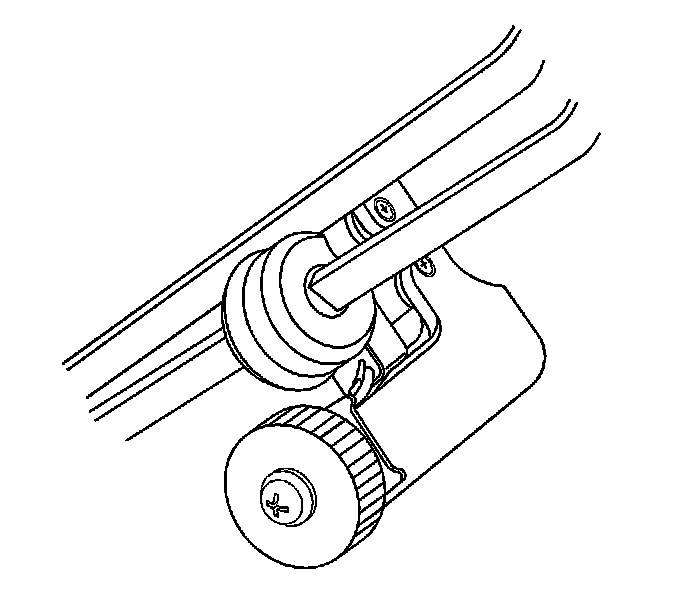
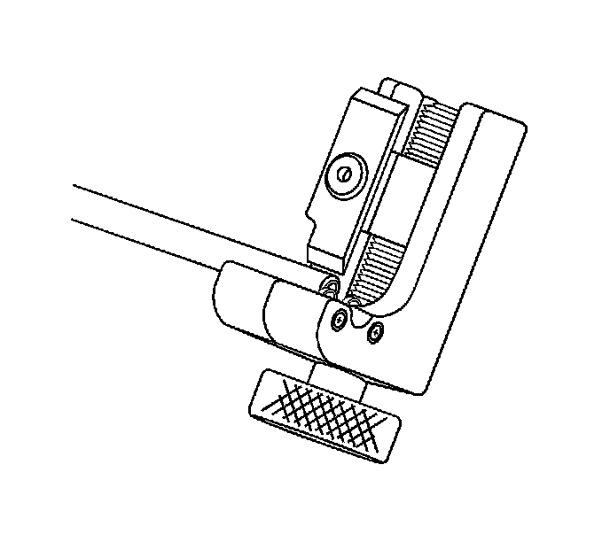
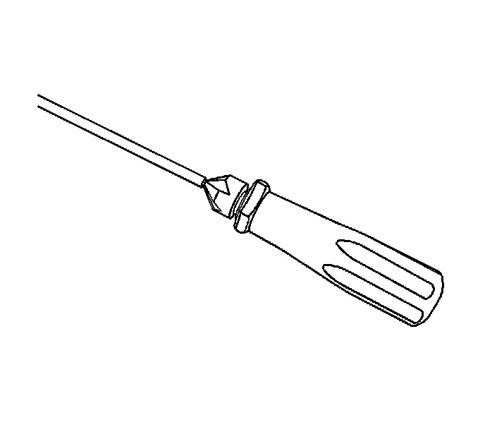
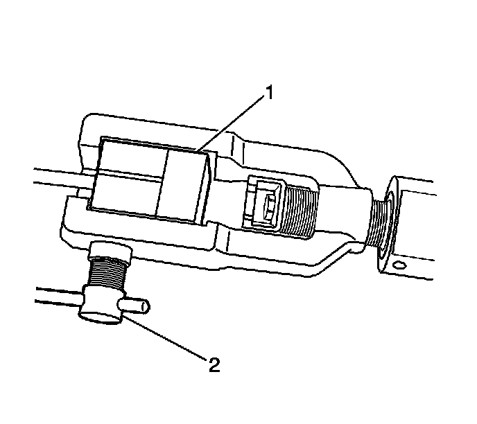
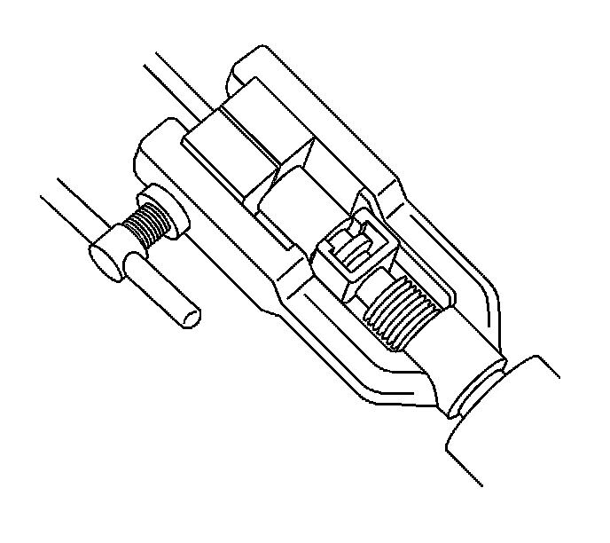
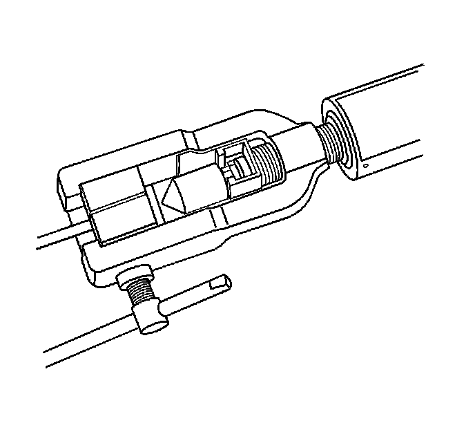
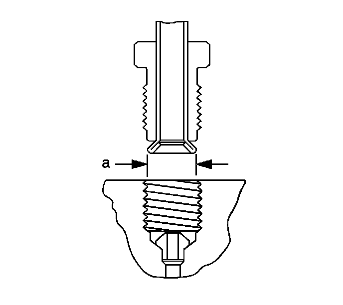

Brake Pipe Replacement
Brake Pipe Replacement
Tools Required
J 45405 Pipe Flaring Tool Kit
Caution: Refer to Brake Fluid Irritant Caution (Brake Fluid Irritant Caution) .
Caution: Always use double walled steel brake pipe when replacing brake pipes. The use of any other pipe is not recommended and may cause brake system failure. Carefully route and retain replacement brake pipes. Always use the correct fasteners and the original location for replacement brake pipes. Failure to properly route and retain brake pipes may cause damage to the brake pipes and cause brake system failure.
Notice: Refer to Brake Fluid Effects on Paint and Electrical Components Notice (Vehicle Damage Warnings) .
Important: When servicing the brake pipes, note the following:
* If sectioning the brake pipe, use replacement pipe of the same type and outside diameter.
* Use fittings of the appropriate size and type.
* Only create flares of the same type or design as originally equipped on the vehicle.

1. Inspect the area of brake pipe to be repaired or replaced.
2. Release the brake pipe to be replaced from the retainers, as required.
3. Select an appropriate location to section the brake pipe, if necessary.
* Allow adequate clearance in order to maneuver the J 45405 .
* Avoid sectioning the brake pipe at bends or mounting points.
4. Using a string or wire, measure the length of the pipe to be replaced including all pipe bends.
5. Add to the measurement taken the appropriate additional length required for each flare to be created.
* 6.35 mm (0.250 in) for 4.76 mm (3/16 in) diameter pipe
* 9.50 mm (0.374 in) for 6.35 mm (1/4 in) diameter pipe
Important: Ensure that the brake pipe end to be flared is cut at a square, 90 degree angle to the pipe length.
6. Using the pipe cutter included in the J 45405 , carefully cut the brake pipe squarely to the measured length.
7. Remove the sectioned brake pipe from the vehicle.
8. Select the appropriate size of brake pipe and tube nuts, as necessary. The brake pipe outside diameter determines brake pipe size.

9. Strip the nylon coating from the brake pipe end to be flared, if necessary.
* Select the appropriate blade on the coating stripping tool included in the J 45405 , by unthreading the blade block from the stripping tool and installing the block with the desired blade facing the tool rollers.
- 6.35 mm (0.250 in) blade for 4.76 mm (3/16 in) diameter pipe
- 9.50 mm (0.374 in) blade for 6.35 mm (1/4 in) diameter pipe
* Insert the brake pipe end to be flared into the stripping tool to the depth of the ledge on the tool rollers.
* While holding the brake pipe firmly against the stripping tool roller ledges, rotate the thumbwheel of the tool until the blade contacts the brake pipe coated surface.
Important: Do not gouge the metal surface of the brake pipe.
* Rotate the stripping tool in a clockwise direction, ensuring that the brake pipe end remains against the tool roller ledges.
* After each successive revolution of the stripping tool, carefully rotate the thumbwheel of the tool clockwise, in order to continue stripping the coating from the brake pipe until the metal pipe surface is exposed.
* Loosen the thumbwheel of the tool and remove the brake pipe.
Important: Ensure that all loose remnants of the nylon coating have been removed from the brake pipe.
* Inspect the stripped end of the brake pipe to ensure that the proper amount of coating has been removed.
- 6.35 mm (0.250 in) for 4.76 mm (3/16 in) diameter pipe
- 9.50 mm (0.374 in) for 6.35 mm (1/4 in) diameter pipe

10. Chamfer the inside and outside diameter of the pipe with the de-burring tool included in the J 45405 .
11. Install the tube nuts on the brake pipe, noting their orientation.
12. Clean the brake pipe and the J 45405 of lubricant, contaminants, and debris.

13. Loosen the die clamping screw of the J 45405 .
14. Select the corresponding die set and install the die halves into the die cage with the full, flat face of one die facing the clamping screw, and the counterbores of both dies facing the forming ram.

15. Place the flat face of an unused die (1) against the die halves in the clamping cage and hold firmly against the counterbored face of the dies.
16. Insert the prepared end of the pipe to be flared through the back of the dies until the pipe is seated against the flat surface of the unused die (1).
17. Remove the unused die (1).
18. Ensure that the rear of both dies are seated firmly against the enclosed end of the die cage.
19. Firmly hand tighten the clamping screw (2) against the dies.

20. Select the appropriate forming mandrel and place into the forming ram.
21. Rotate the hydraulic fluid control valve clockwise to the closed position.
22. Rotate the body of the J 45405 until it bottoms against the die cage.

23. While guiding the forming mandrel into the exposed end of pipe to be flared, operate the lever of the J 45405 until the forming mandrel bottoms against the clamping dies.
24. Rotate the hydraulic fluid control valve counterclockwise to the open position to allow the hydraulic forming ram to retract.

25. Insert the finishing cone into the forming ram.
26. Rotate the hydraulic fluid control valve clockwise to the closed position.
27. Rotate the body of the J 45405 until it bottoms against the die cage.
28. While guiding the finishing cone into the exposed end of pipe to be flared, operate the lever of the J 45405 until the finishing cone bottoms against the dies.
29. Rotate the hydraulic fluid control valve counterclockwise to the open position to allow the hydraulic forming ram to retract.
30. Loosen the die clamping screw and remove the dies and pipe.
31. If necessary, lightly tap the dies until the die halves separate.

32. Inspect the brake pipe flare for correct shape and diameter (a).
* 6.74-7.10 mm (0.265-0.279 in) flare diameter for 4.76 mm (3/16 in) diameter pipe
* 8.57-9.27 mm (0.344-0.358 in) flare diameter for 6.35 mm (1/4 in) diameter pipe
33. If necessary, using the removed section of brake pipe as a template, shape the new pipe with a suitable brake pipe bending tool.
Important: When installing the pipe, maintain a clearance of 19 mm (3/4 in) from all moving or vibrating components.
34. Install the pipe to the vehicle with the appropriate brake pipe unions, as required.
35. If previously released, secure the brake pipe to the retainers.
36. Bleed the hydraulic brake system. Refer to Hydraulic Brake System Bleeding (Pressure) (Service and Repair)Hydraulic Brake System Bleeding (Manual) (Service and Repair) .
37. With the aid of an assistant, inspect the brake pipe flares for leaks by starting the engine and applying the brakes.